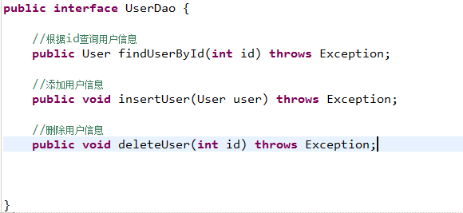
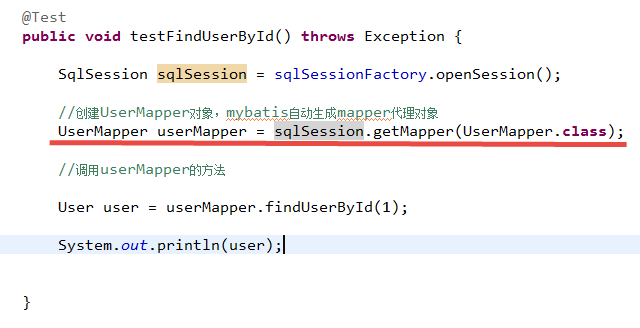
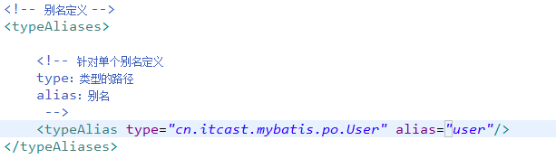
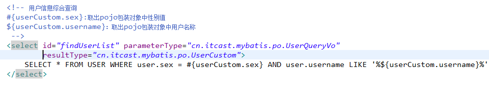
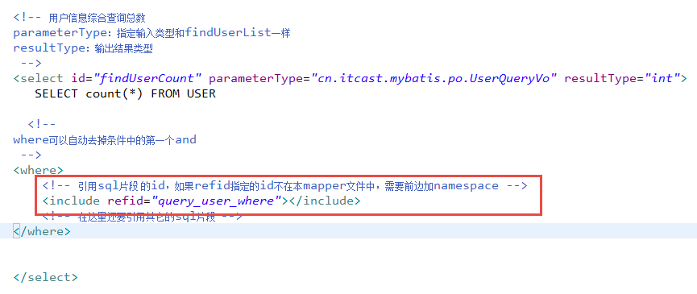

4 mybatis开发dao的方法
4.1 SqlSession使用范围
4.1.1 SqlSessionFactoryBuilder
通过SqlSessionFactoryBuilder创建会话工厂SqlSessionFactory
将SqlSessionFactoryBuilder当成一个工具类使用即可，不需要使用单例管理SqlSessionFactoryBuilder。
在需要创建SqlSessionFactory时候，只需要new一次SqlSessionFactoryBuilder即可。
4.1.2 SqlSessionFactory
通过SqlSessionFactory创建SqlSession，使用单例模式管理sqlSessionFactory（工厂一旦创建，使用一个实例）。
将来mybatis和spring整合后，使用单例模式管理sqlSessionFactory。
4.1.3 SqlSession
SqlSession是一个面向用户（程序员）的接口。
SqlSession中提供了很多操作数据库的方法：如：selectOne(返回单个对象)、selectList（返回单个或多个对象）、。
SqlSession是线程不安全的，在SqlSesion实现类中除了有接口中的方法（操作数据库的方法）还有数据域属性。
SqlSession最佳应用场合在方法体内，定义成局部变量使用。
4.2 原始dao开发方法（程序员需要写dao接口和dao实现类）
4.2.1 思路
程序员需要写dao接口和dao实现类。
需要向dao实现类中注入SqlSessionFactory，在方法体内通过SqlSessionFactory创建SqlSession
4.2.2 dao接口

4.2.3 dao接口实现类
|
|
4.2.4 测试代码：
4.2.5 总结原始 dao开发问题
1、dao接口实现类方法中存在大量模板方法，设想能否将这些代码提取出来，大大减轻程序员的工作量。
2、调用sqlsession方法时将statement的id硬编码了
3、调用sqlsession方法时传入的变量，由于sqlsession方法使用泛型，即使变量类型传入错误，在编译阶段也不报错，不利于程序员开发。
4.3 mapper代理方法（程序员只需要mapper接口（相当 于dao接口））
4.3.1 思路（mapper代理开发规范）
程序员还需要编写mapper.xml映射文件
程序员编写mapper接口需要遵循一些开发规范，mybatis可以自动生成mapper接口实现类代理对象。
开发规范：
1、在mapper.xml中namespace等于mapper接口地址
2、mapper.java接口中的方法名和mapper.xml中statement的id一致
3、mapper.java接口中的方法输入参数类型和mapper.xml中statement的parameterType指定的类型一致。
4、mapper.java接口中的方法返回值类型和mapper.xml中statement的resultType指定的类型一致。
总结：
以上开发规范主要是对下边的代码进行统一生成：
|
|
4.3.2 mapper.java
4.3.3 mapper.xml
4.3.4 在SqlMapConfig.xml中加载mapper.xml
4.3.5 测试

4.3.6 一些问题总结
4.3.6.1 代理对象内部调用selectOne或selectList
如果mapper方法返回单个pojo对象（非集合对象），代理对象内部通过selectOne查询数据库。
如果mapper方法返回集合对象，代理对象内部通过selectList查询数据库。
4.3.6.2 mapper接口方法参数只能有一个是否影响系统 开发
mapper接口方法参数只能有一个，系统是否不利于扩展维护。
系统 框架中，dao层的代码是被业务层公用的。
即使mapper接口只有一个参数，可以使用包装类型的pojo满足不同的业务方法的需求。
注意：持久层方法的参数可以包装类型、map。。。，service方法中建议不要使用包装类型（不利于业务层的可扩展）。
5 SqlMapConfig.xml
mybatis的全局配置文件SqlMapConfig.xml，配置内容如下：
properties（属性）
settings（全局配置参数）
typeAliases（类型别名）
typeHandlers（类型处理器）
objectFactory（对象工厂）
plugins（插件）
environments（环境集合属性对象）
environment（环境子属性对象）
transactionManager（事务管理）
dataSource（数据源）
mappers（映射器）
5.1 properties属性
需求：
将数据库连接参数单独配置在db.properties中，只需要在SqlMapConfig.xml中加载db.properties的属性值。
在SqlMapConfig.xml中就不需要对数据库连接参数硬编码。
将数据库连接参数只配置在db.properties中，原因：方便对参数进行统一管理，其它xml可以引用该db.properties。
在sqlMapConfig.xml加载属性文件：
properties特性：
注意： MyBatis 将按照下面的顺序来加载属性：
- 在 properties 元素体内定义的属性首先被读取。
- 然后会读取properties 元素中resource或 url 加载的属性，它会覆盖已读取的同名属性。
- 最后读取parameterType传递的属性，它会覆盖已读取的同名属性。
建议：
不要在properties元素体内添加任何属性值，只将属性值定义在properties文件中。
在properties文件中定义属性名要有一定的特殊性，如：XXXXX.XXXXX.XXXX
5.2 settings全局参数配置
mybatis框架在运行时可以调整一些运行参数。
比如：开启二级缓存、开启延迟加载。。
全局参数将会影响mybatis的运行行为。
详细参见“学习资料/mybatis-settings.xlsx”文件
5.3 typeAliases（别名）重点
5.3.1 需求
在mapper.xml中，定义很多的statement，statement需要parameterType指定输入参数的类型、需要resultType指定输出结果的映射类型。
如果在指定类型时输入类型全路径，不方便进行开发，可以针对parameterType或resultType指定的类型定义一些别名，在mapper.xml中通过别名定义，方便开发。
5.3.2 mybatis默认支持别名
5.3.3 自定义别名
5.3.3.1 单个别名定义

引用别名：
5.3.3.2 批量定义别名（常用）
5.4 typeHandlers（类型处理器）
mybatis中通过typeHandlers完成jdbc类型和java类型的转换。
通常情况下，mybatis提供的类型处理器满足日常需要，不需要自定义.
mybatis支持类型处理器：
5.5 mappers（映射配置）
5.5.1 通过resource加载单个映射文件
5.5.2 通过mapper接口加载单个mapper
按照上边的规范，将mapper.java和mapper.xml放在一个目录 ，且同名。
5.5.3 批量加载mapper(推荐使用)
6 输入映射
通过parameterType指定输入参数的类型，类型可以是简单类型、hashmap、pojo的包装类型
。
6.1 传递pojo的包装对象
6.1.1 需求
完成用户信息的综合查询，需要传入查询条件很复杂（可能包括用户信息、其它信息，比如商品、订单的）
6.1.2 定义包装类型pojo
针对上边需求，建议使用自定义的包装类型的pojo。
在包装类型的pojo中将复杂的查询条件包装进去。
6.1.3 mapper.xml
在UserMapper.xml中定义用户信息综合查询（查询条件复杂，通过高级查询进行复杂关联查询）。

6.1.4 mapper.java
6.1.5 测试代码
7 输出映射
7.1 resultType
使用resultType进行输出映射，只有查询出来的列名和pojo中的属性名一致，该列才可以映射成功。
如果查询出来的列名和pojo中的属性名全部不一致，没有创建pojo对象。
只要查询出来的列名和pojo中的属性有一个一致，就会创建pojo对象。
7.1.1 输出简单类型
7.1.1.1 需求
用户信息的综合查询列表总数，通过查询总数和上边用户综合查询列表才可以实现分页。
7.1.1.2 mapper.xml
7.1.1.3 mapper.java

7.1.1.4 测试代码
7.1.1.5 小结
查询出来的结果集只有一行且一列，可以使用简单类型进行输出映射。
7.1.2 输出pojo对象和pojo列表
不管是输出的pojo单个对象还是一个列表（list中包括pojo），在mapper.xml中resultType指定的类型是一样的。
在mapper.java指定的方法返回值类型不一样：
1、输出单个pojo对象，方法返回值是单个对象类型
2、输出pojo对象list，方法返回值是List<Pojo>
生成的动态代理对象中是根据mapper方法的返回值类型确定是调用selectOne(返回单个对象调用)还是selectList （返回集合对象调用 ）.
7.2 resultMap
mybatis中使用resultMap完成高级输出结果映射。
7.2.1 resultMap使用方法
如果查询出来的列名和pojo的属性名不一致，通过定义一个resultMap对列名和pojo属性名之间作一个映射关系。
1、定义resultMap
2、使用resultMap作为statement的输出映射类型
7.2.2 将下边的sql使用User完成映射
SELECT id id,username username FROM USER WHERE id=#{value}
User类中属性名和上边查询列名不一致。
7.2.2.1 定义reusltMap
7.2.2.2 使用resultMap作为statement的输出映射类型
7.2.2.3 mapper.java
7.2.2.4 测试
7.3 小结
使用resultType进行输出映射，只有查询出来的列名和pojo中的属性名一致，该列才可以映射成功。
如果查询出来的列名和pojo的属性名不一致，通过定义一个resultMap对列名和pojo属性名之间作一个映射关系。
8 动态sql
8.1 什么是动态sql
mybatis核心 对sql语句进行灵活操作，通过表达式进行判断，对sql进行灵活拼接、组装。
8.2 需求
用户信息综合查询列表和用户信息查询列表总数这两个statement的定义使用动态sql。
对查询条件进行判断，如果输入参数不为空才进行查询条件拼接。
8.3 mapper.xml
8.4 测试代码
8.5 sql片段
8.5.1 需求
将上边实现的动态sql判断代码块抽取出来，组成一个sql片段。其它的statement中就可以引用sql片段。
方便程序员进行开发。
8.5.2 定义sql片段
8.5.3 引用sql片段
在mapper.xml中定义的statement中引用sql片段：

8.1 foreach
向sql传递数组或List，mybatis使用foreach解析
8.1.1 需求
在用户查询列表和查询总数的statement中增加多个id输入查询。
sql语句如下：
两种方法：
8.1.2 在输入参数类型中添加List ids传入多个id
8.1.3 修改mapper.xml
WHERE id=1 OR id=10 OR id=16
在查询条件中，查询条件定义成一个sql片段，需要修改sql片段。